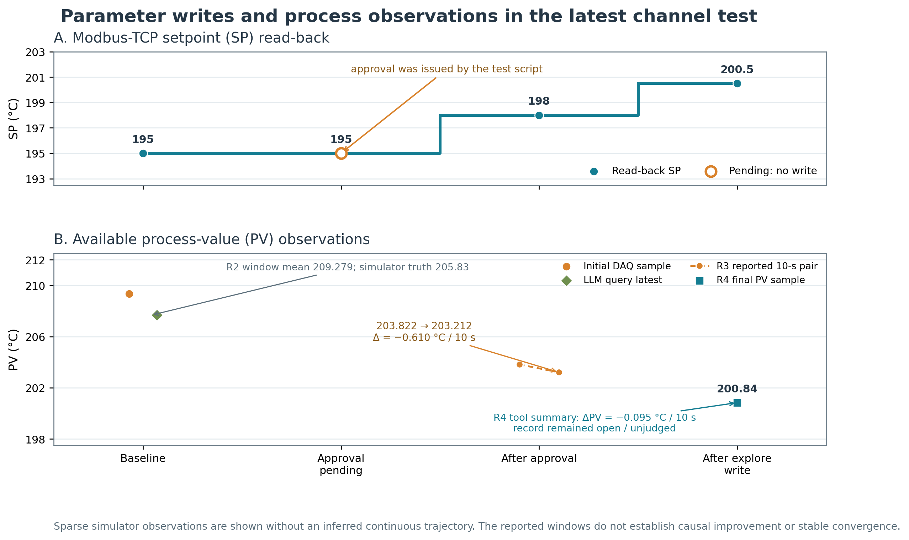
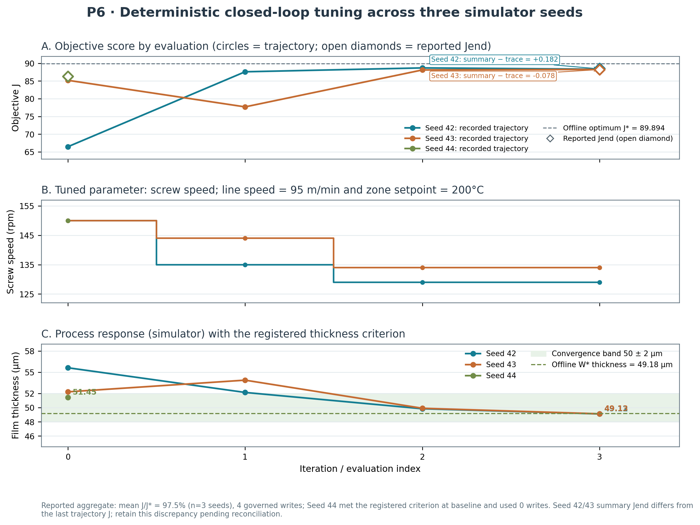
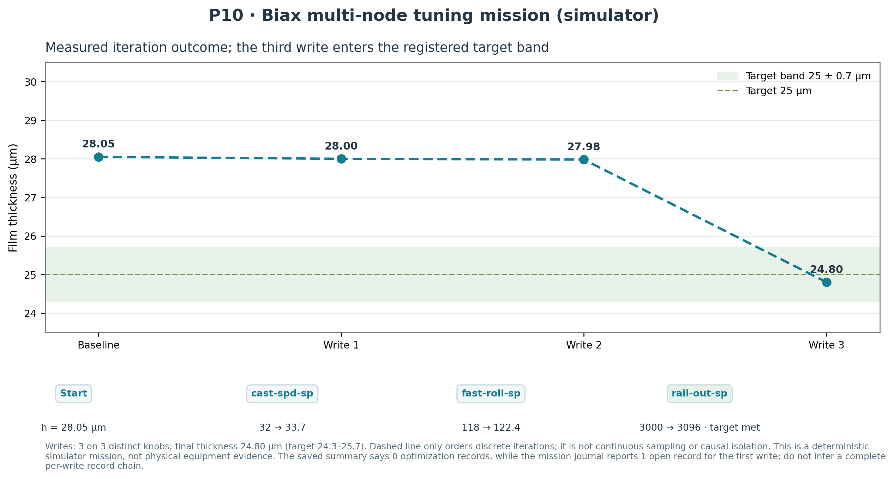

当前系统最新测试结果评审
最新测试展示了真实 LLM Agent 在本地工况模拟器中的采集、受治理写入和读回路径。结果比论文 R20 覆盖更多系统模块，但不代表 PIPELINE P12 完整通过，也没有证明实体设备可以直接投产。
核心判断
“更全面”要按测试目标分别判断：最新 Channel 验收横跨 DAQ、HITL、DCW、AML、求解器和本体接口；集成基准的协议与仿真覆盖最广；P12 才是 PIPELINE 定义的 lead＋worker 完整团队实验，而最近一次 P12 没有进入任务阶段。
所测配置下，Agent 可读取模拟 DAQ 数据；HITL pending 时 SP 未变，脚本批准后读回 198；后续探索写读回 200.5，并留下治理记录。
真实操作员审批、真实 PLC/现场协议、跨场景的 AgentTeam 完整执行、目标达成与稳定过程表现、故障恢复和上线安全。
设定值下发与过程观测
以下图表只还原报告中记录的值。设定值读回与 PV 观测分开展示；PV 点之间不连成连续曲线。R4 的两个优化条目仍处于 open/未判定状态。

矢量图：PDF · SVG；逐步数据：CSV。原始断言：report.json。

最新 Channel 测试流程
连接既有模拟器
SP 基线 195
31 点查询
pending 时 SP=195
SP 读回 198
198 → 200.5
台账 open/未判定
流程中的“批准”由测试脚本自动完成，不是操作员在 UI 中人工批准。R0.1 返回 `started=false, reason=already-up`，所以模拟器由本轮隔离启动这一说法不成立。
不同测试批次的证据边界
| 批次 | 做了什么 | 结果 | 能支持的结论 |
|---|---|---|---|
| 最新 Channel 24 assertions | 单 OMP Agent；DAQ 查询、手动门控写、自动探索写、readback、journal、AML/solver/ontology 接口。 | PASS 24/24 SP 195→198→200.5 | 证明本地模拟配置下的一条真实 Agent 接入与受治理写路径。非人工审批；非真实 PLC；非 P12 Team。 |
| 集成基准 77 checks | 五协议驱动与接口、多种治理检查、另一模拟预设、三 seed 闭环、Biax 模拟任务。 | 72 PASS 5 WARN 0 FAIL | 系统集成覆盖更广，但 harness 是 deterministic，LLM Agent loop 关闭，平台和模拟器已运行并被复用。警告包括 MQTT 0/3、HTTP 1/3、HITL 冷却期拒写、采样恢复与语义卡检查；RTU 仅采集。 |
| 最新 P12 strict PIPELINE | 目标前的 DAQ 新鲜度资格检查。 | NOT-QUALIFIED 未创建 goal | 说明当前无法据此报告完整团队任务成功。 |
| 前一 P12 strict PIPELINE | 尝试 lead＋2 workers、任务派发、事件与设备/治理对账。 | QUALIFIED workflow / integrity FAIL | 未完成 worker 派发与可对账写入；不能计为完整 episode 成功。 |
集成基准的作业流程
以下是确定性集成基准的执行脉络。每个阶段由独立子检查构成；该批次没有开启 LLM Agent loop，平台和模拟器使用已有运行实例。
载入物理模型与离线参考最优值
DAQ、治理写与越界拦截
设备读回 → DAQ 复测
lead-worker 任务路径
后备回滚与 Biax 多旋钮任务
这是 72/77 通过、5 警告、0 失败的确定性模拟基准；它与 24/24 的实时 OMP 单 Agent 验收不是同一批运行。两者不能混用分母。五项警告里，MQTT 为 0/3 轮、HTTP 为 1/3 轮，HITL 批准后受回退冷却期拦截；另外两项涉及 DAQ sampling-ready 与 Biax 语义卡检查。
集成基准功能矩阵
| 阶段 | 检查内容 | 关键结果 / 限制 |
|---|---|---|
| P0–P1 | 环境预检、工况模型、离线 W* | P0 的采样恢复检查警告；P1 模型/reference 检查通过。 |
| P2–P3 | Modbus TCP、OPC UA、MQTT、HTTP、Modbus RTU 配置与读写 | 五类端点合计 52 个 DAQ 样本；4 条可写端点越界请求各 6/6 拦截；RTU 仅数采，HTTP 无设备读回偏差。 |
| P4 | 逐线三轮“观察—探索写—读回—复测” | Modbus TCP/OPC UA 为 3/3；MQTT 0/3；HTTP 1/3，且 HTTP 不提供读回。 |
| P4b–P4f | 优化记录 keep/rollback、HITL、审计台账、Recipe 版本、参数语义与四层写限 | rollback 与配方非破坏回退通过；台账含 11 个 anchors、200 条审计/运维记录；四层限界及边界拒绝通过。HITL pending/approve 接口通过，但写效果被 cooldown 拦截。 |
| P4m | AgentTeam 任务板、受治理单步写与目标复测 | SP=204.704，终值 PV≈204.70，在 ±0.75 内；报告有即时 PV 判读未达、后续终点达标，使用确定性 harness。 |
| P6 | 三 seed 闭环目标调优 | 报告汇总 mean J/J*=97.5%、4 次写、3/3 停止条件满足；seed 42/43 的汇总 Jend 与轨迹终点需对账。 |
| P7–P9 | 向量/图像采集、第二预设接入、backstop 回滚、team/memory/registry | 采到 2 个向量帧和 2 个图像帧；第二预设 3 条可写 Line + 2 条 satellite DAQ，9/9 越界拦截、0 合法误拦；越界后 120.144 s 恢复基线；团队/记忆检查及 14 个引擎登记通过。 |
| P10 | Biax 九设备发现/补建、五协议驱动、确定性 harness 驱动的任务板/lead-worker 路径 | 9 设备、30 SP/19 DAQ、9/9 驱动检查；3 次写入后厚度 24.80 μm 达到目标。语义卡为 warning；run.json 汇总 0 条记录、任务时 journal 查询 1 条 open entry，两个证据面未对账。 |
详见 完整集成报告、原始 run.json 和 summary.json。
协议驱动数据与写入检查
以下均是驱动对本机模拟协议端点的事务结果，不代表现场 PLC 通信。读回差值为空表示该通道没有可用读回值。
| 协议 | DAQ 点 | 写入 p50 / p95 | 读回 | 结果限定 |
|---|---|---|---|---|
| Modbus TCP | 9 | 46.988 / 47.690 ms | 偏差 0.04 | F5 拦截 6/6 |
| OPC UA | 10 | 19.893 / 20.114 ms | 偏差 0 | F5 拦截 6/6 |
| MQTT | 6 | 21.135 / 22.004 ms | 偏差 0 | F5 拦截 6/6 |
| HTTP | 13 | 33.062 / 44.601 ms | 无读回值 | F5 拦截 6/6 |
| Modbus RTU | 14 | — | — | DAQ-only satellite |
独立佐证套件
同一验收报告还列出离线本体服务层 57/57、绑定方式×协议 19/19、MES 镜像数采与模型查询 17/17。它们有独立证据目录，不能加进 24/24 或 72/77。该报告注明 optimizer 正向求解、AML 全训练链和本体 UI 六 tab 本轮没有重跑。
P6 · 三 seed 闭环参数调优面板
图中把每次仿真评估的 J、螺杆转速和厚度轨迹分开展示。Seed 42/43 各做两次治理写；Seed 44 的初始厚度 51.45 μm 已在 50±2 μm 带内，因此没有写入即满足停止判据。

图例中的实心圆为轨迹值，空心菱形为汇总 `Jend`。Seed 42 差 +0.182；Seed 43 差 −0.078。汇总仍记录 mean J/J*=97.5%，但精确终点应在引用前核实。PDF · 轨迹 CSV · 生成脚本
Seed 42 的 J 由 66.454 升至 88.703 后，最后轨迹点回到 88.339；Seed 43 首轮降至 77.701，随后回升至 88.280。两条轨迹都不是逐轮单调改进。Seed 44 零次写入即停止。该结果证明固定模拟器与判据下的闭环执行，不是三次独立现场试验，也不单独证明策略的泛化性能。
P10 · Biax 多节点调参过程
这一项记录了三个不同工艺旋钮的顺序调整，以及每轮之后的厚度读数。厚度直到第三次写入后才进入预设目标带。

铸片辊速度 32→33.7 后厚度 28.05→28.00 μm；快辊速度 118→122.4 后为 27.98 μm；出口轨宽 3000→3096 后为 24.80 μm，落在 24.3–25.7 μm 目标带。图中虚线仅连接离散迭代点以显示次序，不代表连续采样或因果隔离。该顺序任务目标达成，但 run.json 汇总字段为 0 条 optimization records，任务期间的 journal 查询显示 1 条 open entry；两个证据面未对账，不能声称三次写入均有完整对应记录。该 mission 是确定性 harness 驱动的任务板/lead-worker 路径，不是实时 OMP Agent 任务。
24 条断言逐项归纳
| 阶段 | 条数 | 结果摘要 / 限定 |
|---|---|---|
| R0 环境 | 5 | 隔离应用 home、管理员、开线和基线通过；模拟器为已有运行进程。端点列表实际含 Modbus TCP、Modbus RTU、OPC UA、MQTT、HTTP 五类，报告的“四种”计数错误。 |
| R1 工具面 | 4 | Channel、OMP/LM Studio Agent、绑定模式和 10 项收窄工具面通过。 |
| R2 数采 | 1 | DAQ 返回最新 207.67°C、均值 209.279°C；对照模拟器真值 205.83°C。范围为一条模拟线。 |
| R3 HITL | 3 | pending 阶段保持 SP=195，批准后 SP=198；批准由脚本执行。10 s PV 读数 203.822→203.212°C。 |
| R4 写入与台账 | 6 | SP=198→200.5；最后 PV=200.84°C，和 SP 相差 0.34°C。报告的 10 s ΔPV 为 −0.095°C，记录未判定；不能写成已证明改善/收敛。 |
| R5 AML/solver | 3 | 模型检索可用但无匹配项；solver ready=0。solve 断言实际因工具被禁用而拒绝，不是资格 Profile 门控证明。 |
| R6 本体 | 2 | Agent 上下文能读取节点工艺语义、单位及产线信息。 |
与论文 R20 相比
R20 有两个模拟场景、六个顺序任务，并保留六次任务的读回回执与 run-tagged 单点样本；六个样本都未达到目标带，采用合成审批和 SQLite 回退。最新 Channel 测试覆盖的模块更多，但只有一个场景、一个 Agent 和两次参数写入；没有连续 PV 轨迹。它们证明不同方面，不能作为前后重复或合并计数。
可报告“所测本地模拟映射下，Agent 完成一次 DAQ 查询及两次受治理的 Modbus-TCP 设定值写入，脚本批准后读回一致并形成治理记录”。不要据此声称现场部署、跨协议自动迁移、工艺优化效果或多 Agent Team 成功。
PIPELINE 与上线判断
| 问题 | 判定 | 理由 |
|---|---|---|
| 是否按 PIPELINE 完成真实场景实验？ | 否 | 最新 Channel 测试不是 P12 的 lead＋2 worker episode；最近 P12 在资格阶段停止，之前一次 workflow 与 evidence integrity 均失败。 |
| 是否证明配置驱动的虚拟场景接入？ | 有条件支持 | 多协议仿真集成基准与 Modbus-TCP Agent 写入证据都证明了所测配置可以接通。未覆盖任意新设备/现场映射。 |
| 是否支持真实场景上线？ | 证据不足 | 没有现场 PLC/传感器 commissioning；没有验证编码、缩放、单位、联锁、现场网络、失联恢复、真实采样延迟与操作员审批。 |
“接口配置正确即可接入”是系统设计目标。当前证据只验证了几组已配置模拟端点；不能把该设计假设表述成已验证的现场无缝迁移能力。
原始报告可读性
集成基准有 Markdown 报告和 HTML 仪表盘，便于浏览，但 5 项警告必须保留在结论中。最新 Channel 报告用 JSON 逐条保存断言，细节可复核但不适合快速理解执行顺序；其摘要中端点数量和 solver 拒绝原因也需要勘误。P12 报告的三段判定（qualification/workflow/integrity）清楚，但结果未通过主终点。本文件补充了流程图和写入/观测图，原始证据未被改写。